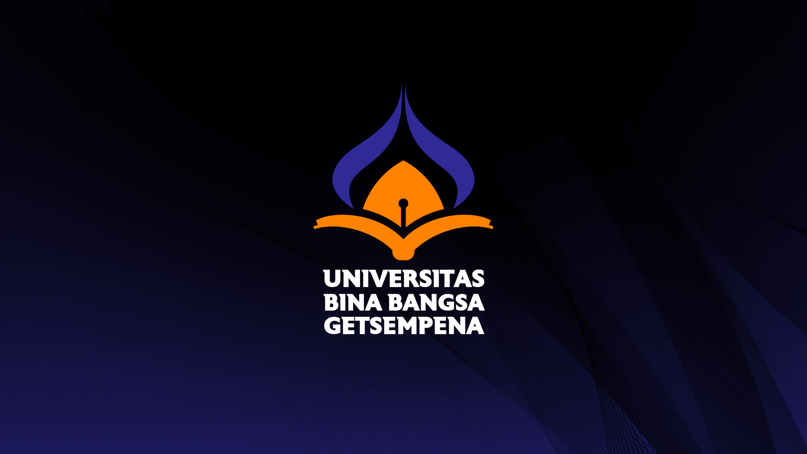

Sejarah UBBG
Universitas Bina Bangsa Getsempena terdiri dari dua Fakultas yakni Fakultas Keguruan dan Ilmu Pendidikan (FKIP) dan Fakultas Sains Teknologi dan Ilmu Kesehatan (FSTIK). FKIP terdiri dari program studi jenjang sarjana yakni S1 Pendidikan Bahasa Indonesia, S1 Pendidikan Bahasa Inggris, S1 Pendidikan Matematika, S1 Pendidikan Jasmani, S1 Pendidikan Guru Sekolah Dasar, S1 Pendidikan Guru Pendidikan Anak Usia Dini, S1 Pendidikan Ilmu Pengetahuan Alam, dan S1 Pendidikan Seni Pertunjukan.
Mutu Pendidikan dan S2 Pendidikan Dasar. Jenjang profesi yakni Pendidikan Profesi Guru. Sementara itu, FSTIK terdiri dari program studi jenjang sarjana yakni S1 Kebidanan, S1 Keperawatan, dan S1 Ilmu Komputer. Sementara itu, jenjang profesi terdiri dari Pendidikan Profesi Ners dan Pendidikan Profesi Bidan. UBBG merupakan perguruan tinggi yang sudah terakreditasi B. Hampir semua Prodi sudah terakreditasi B baik di lingkungan FKIP maupun FSTIK. Bahkan ada satu Prodi yang sudah terakreditasi unggul yakni S1 PGSD. Tentu saja, akan banyak lagi Prodi yang akan menyusul untuk mendapatkan nilai akreditasi unggul.
Seiring berjalannya waktu, UBBG terus berbenah dalam meningkatkan pelayanan dengan berbagai pengembangan inovasi teknologi. UBBG juga terus melejitkan prestasinya baik di kancah nasional maupun internasional. Selain itu, sebagai wujud implementasi program Merdeka Belajar Kampus Merdeka (MBKM) Kemendikbudristek, UBBG mensosialisasikan dan mengajak mahasiswa untuk mengikuti Program Kampus Mengajar, Pertukaran Mahasiswa Merdeka, dan lain sebagainya. Alhasil banyak mahasiswa yang lolos program ini bahkan ditempatkan di perguruan tinggi unggulan Indonesia. Sebagai PTS terbaik Aceh, UBBG mengimplementasikan visi-misinya menuju Smart University, berdaya saing di tingkat global lewat program kerja sama dengan berbagai perguruan tinggi dan lembaga internasional. Dengan capaian-capaian inilah yang mengantarkan UBBG meraih penghargaan PTS terbaik dari LLDIKTI Wilayah XIII Aceh. UBBG juga sudah mendapatkan sertifikat ISO 9001:2015 dan ISO 21001:2018.